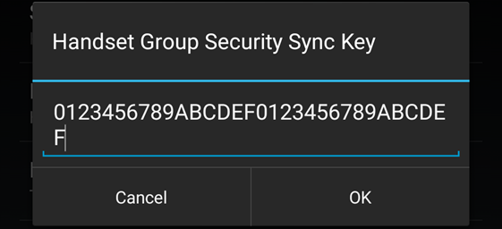
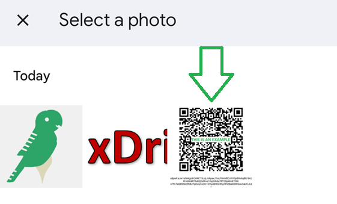

Sync Follower setup

Settings
 xDrip+ Sync Settings
xDrip+ Sync Settings
Old xDrip+ Sync
In July 2024, Google shutdown the deprecated the Firebase API xDrip+ used for xDrip+ Sync.
Update xDrip+ to a version at least July 23rd 2024 to use the legacy Sync method.
Updating xDrip+ to minimum latest release is recommended.
xDrip+ provides a unique real time sync mechanism between Android devices making BG and treatments sharing the easiest possible task.
Here the original reference video.
Prerequisites⌁
Warning
Google Play services are mandatory to use this feature. Make sure they are present, enabled and not subject to battery optimization.
xDrip+ master phone is the device that is actually getting directly glucose readings from a sensor, a bridge, an app.
Having a follower device being xDrip+ sync master adds little value unless the follower device can't use the same data source.
Your master should receive data reliably. Always troubleshoot the master first if you don't have data on your follower.
Setup master⌁
Make the primary data source phone master (enable checkbox):
Settings
xDrip+ Sync Settings
Be Master for Followers 
Copy the Sync Key⌁
Option 1 (recommended)⌁
On the master phone display the Sync Key QR code:
 Show settings QR code
Show settings QR code
Leave the master phone on this picture for the moment.

Option 1 bis (follower phone cannot read the QR code)⌁
Take a screenshot of the QR code and send it it the follower phone (MMS, WhatsApp, upload to Google Cloud, ...).
Option 2 (complicated)⌁
Settings
xDrip+ Sync Settings
Handset Group Security Sync Key

Setup follower⌁
Make all other phones followers (disable checkbox):
Settings
xDrip+ Sync Settings
Be Master for Followers 
Use xDrip Cloud must be set identically on all phones
Master and followers. Either it is ON for all, or OFF for all.
Use xDrip Cloud
Use the new xDrip+ cloud servers. Master and follower must have this setting set the same.
Copy the Sync Key from the master⌁
Option 1 (recommended)⌁
Settings
 Auto Configure
Auto Configure
Camera
You need to authorize xDrip+ to access the phone camera.
Scan the QR code displayed on your master phone.

You will be asked to confirm you want to import these settings (make sure you import safe settings).
Are you sure?
Only import settings from sources you trust!
Please confirm to import the following settings:
setting1
setting2
setting3
No Yes
Option 1 bis (follower phone cannot read the QR code)⌁
Settings
Auto Configure
Image file
Select the image containing the QR code.

Are you sure?
Only import settings from sources you trust!
Please confirm to import the following settings:
setting1
setting2
setting3
No Yes
Option 2 (complicated)⌁
Edit the key field and type exactly the same key than the master.
Settings
xDrip+ Sync Settings
Handset Group Security Sync Key